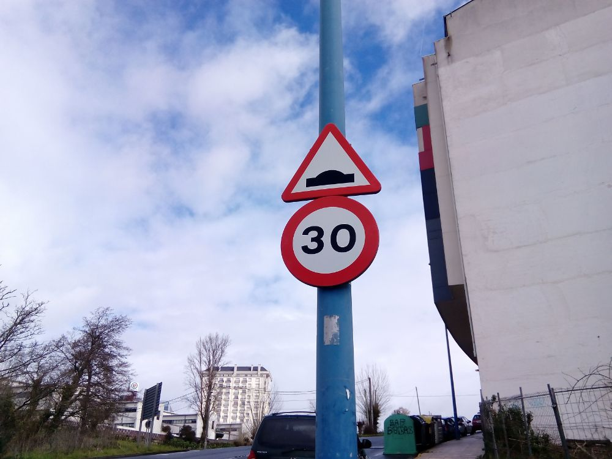
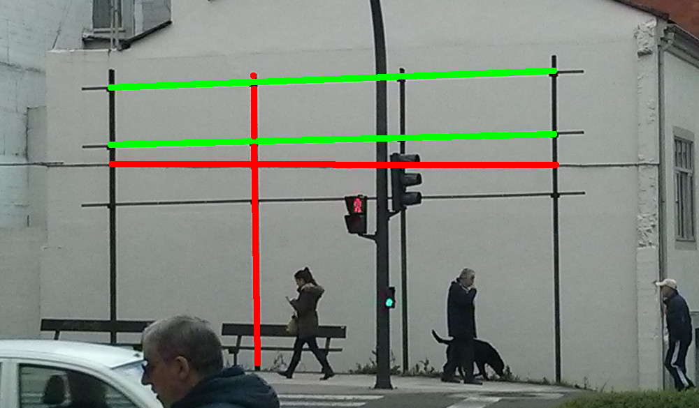
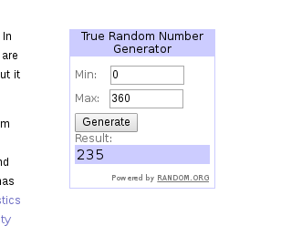
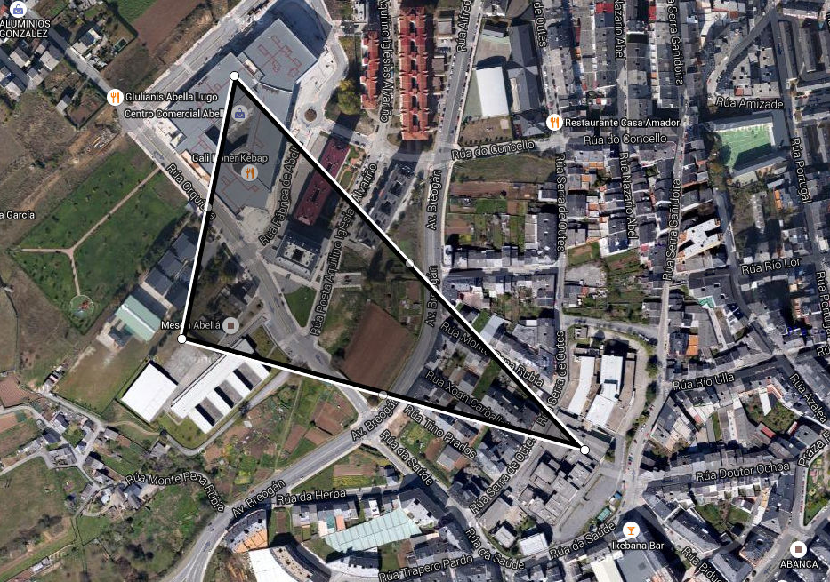

Mestrado en Profesorado de Educación Secundaria Obrigatoria e Bacherelato, Formación Profesional e Ensinanaza de Idiomas
Unidade didáctica: “Figuras xeométricas planas. Concepto e propiedades.”
| Alumno: | Chavarría Teijeiro, Marcos |
|---|---|
| Especialidade: | Matemáticas |
| Titora: | Pérez González, Mercedes |
Índice
1. Fundamentación teórica
2. Desenvolvemento
3. Conclusión e valoracións
Fundamentación...
Psicolóxica
Pedagóxica
Sociolóxica
F. Psicolóxica
Pubertade e adolescencia
Desenvolvemento Cognitivo
Personalidade
Aprendizaxe
F. Pedagóxica
Aprendizaxe por recepción
Aprendizaxe Colaborativo
Papel do profesor
F. Sociolóxica
Escola como igualadora
Tolerancia
Coñecemento da cultura propia
Cidadanía crítica
Desenvolvemento
Contexto
Unidade Didáctica
Valoración da Aplicación
Contexto
IES Leiras Pulpeiro (Lugo)
Aula → 18 estudantes
Bo rendemento e comportamento
Temática
Xeometría no día a día
Xust. Curricular
Comp. Clave • Contidos • Metodoloxía • Obxectivos da ESO
Actividades

Blogue
Act. 0: Fotografía
Act. 1: Que é a xeometría?
Act. 2: Puntos, rectas e planos
Act. 3: Ángulos
Act. 4: Mediatriz e Bisectriz
Act. 5: Exame
Act. 6: Polígonos. Triángulos

Act. 7: Suma ángulos do triángulo
Act. 8: Puntos e rectas notables
Act. 9: Th. Pitágoras
Act. 10: Cuadriláteros

Act. 11: Elementos
Act. 12: Trívial